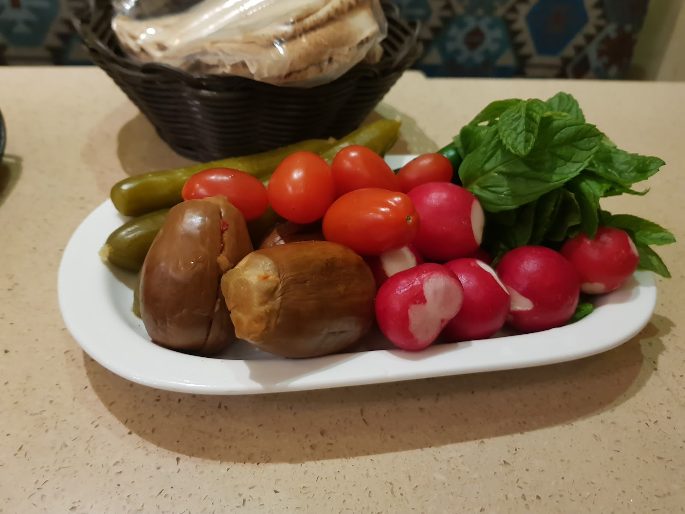
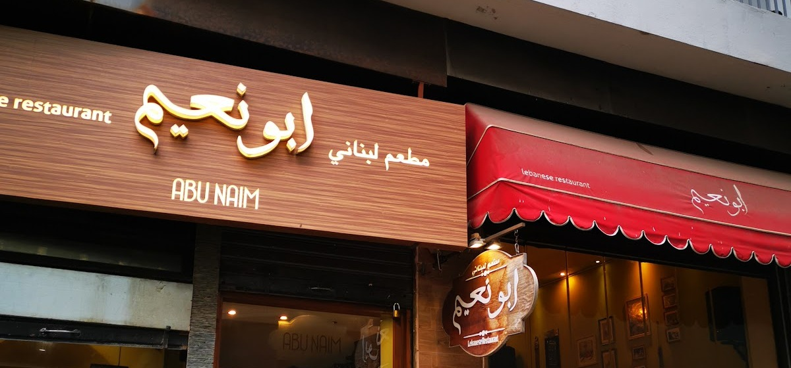
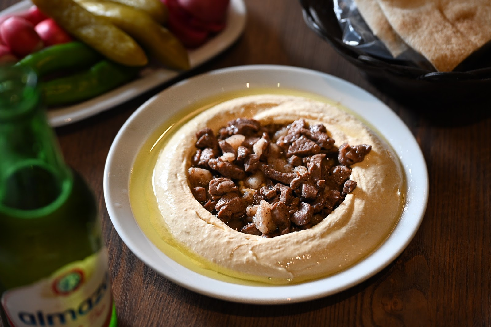
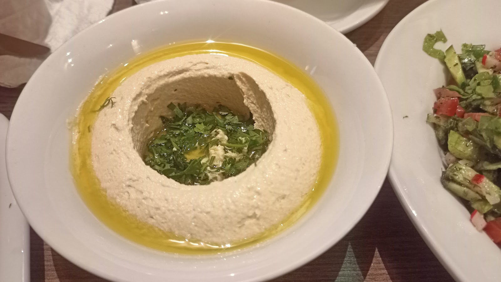
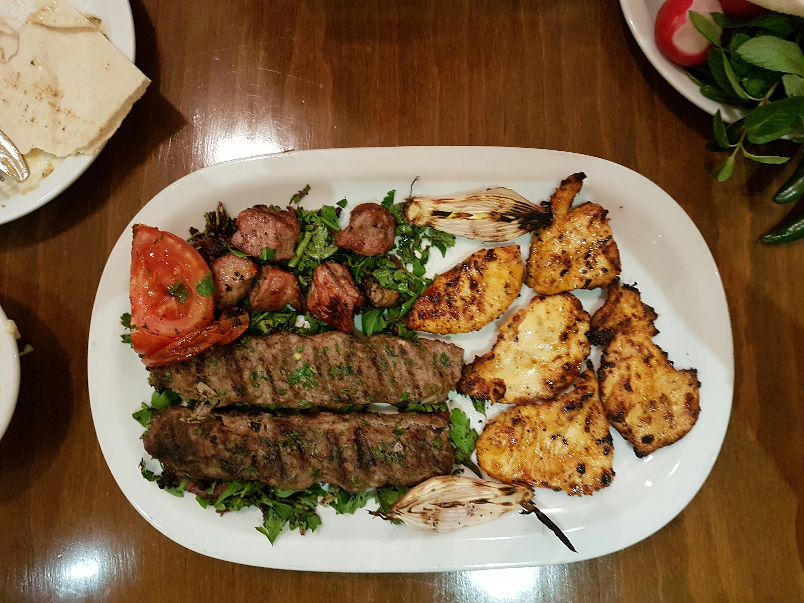
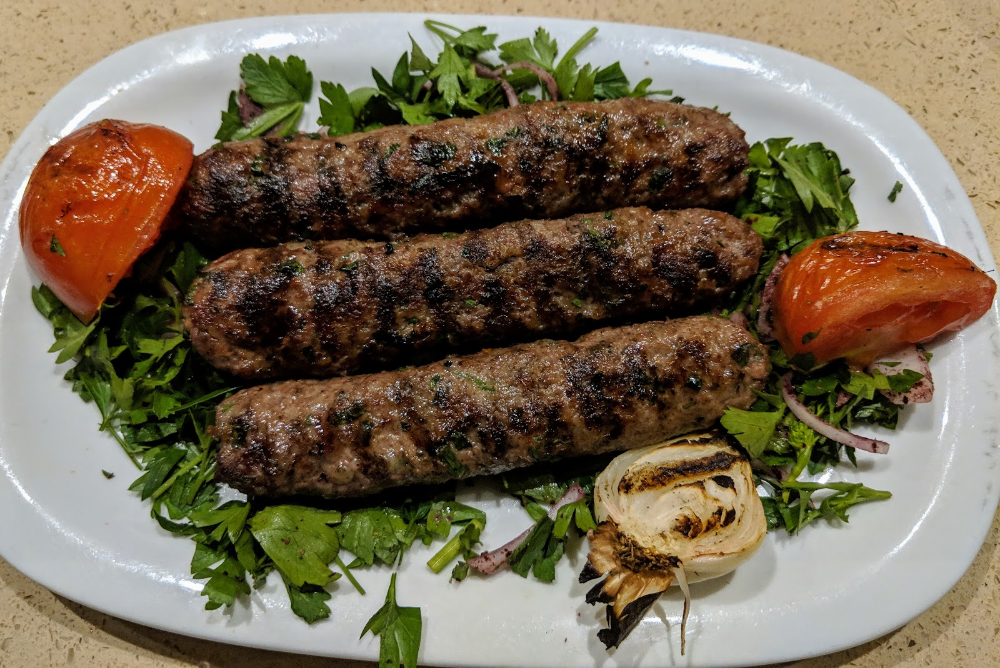
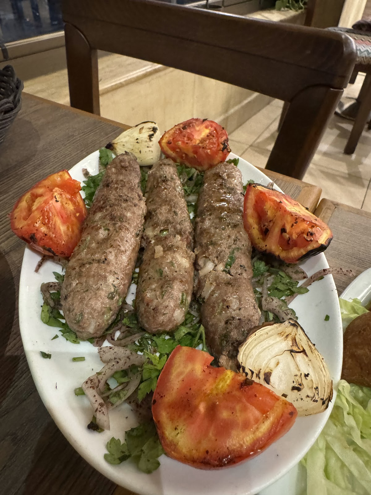
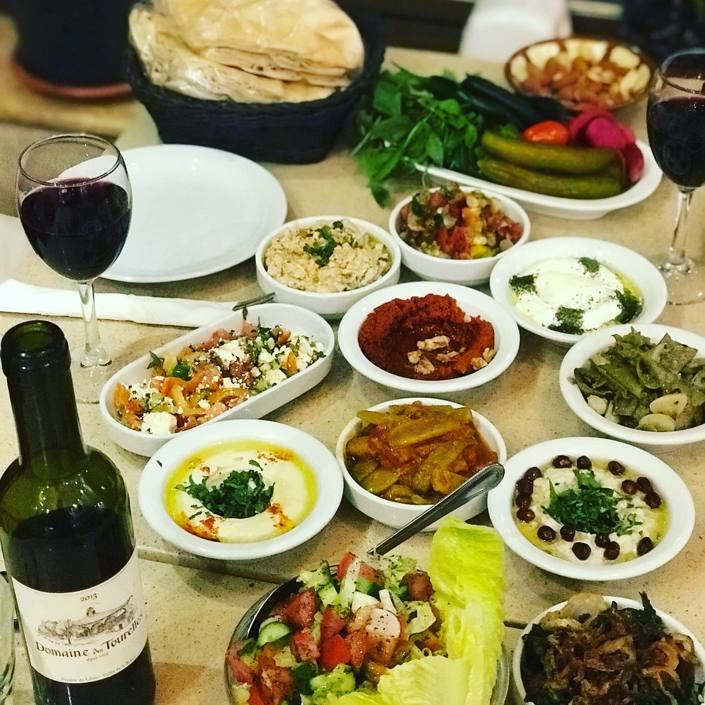
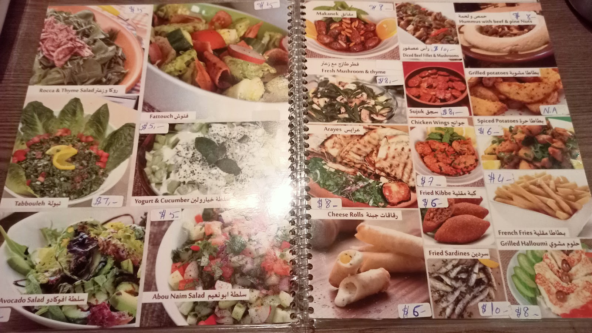

Iam not exaggerating, it's the best taste in Lebanon.mutzi travelling
Very inconspicuous small place on a tiny side street in Hamra region of Beirut, but the food was excellent.got the shish tawouk (chicken kabob), hummus with beef, tabbouleh, cheese rolls, fried kebbehDiran Afarian
Lovely restaurant in Hamra. It is in Abdel Aziz St off Hamra St and a little hard to find. The owner and staff are very warm and welcoming. English is spoken and an English menu is available.Philip Moses
Abdel Aziz St., Hamra, facing Piccadilly Theatre, Beirut
+961 1 750 480